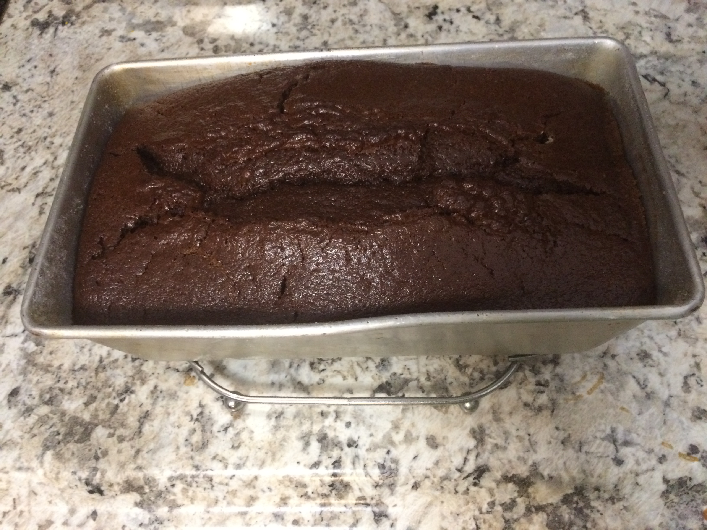

Ingredients
- Cooking spray
- 1 cup unsweetened cocoa powder (natural or Dutch process)
- 2 1/2 cups all-purpose flour
- 2 cups sugar
- 2 cups sugar
- 1 teaspoon baking soda
- 1 teaspoon salt
- 3 large eggs, at room temperature
- 3/4 cup vegetable oil
- 1/2 cup sour cream
- 2 teaspoons vanilla extract
Steps
- Preheat the oven to 350 degrees F. Coat two 9-inch-round cake pans with cooking spray and line the bottoms with parchment paper.
- Whisk the cocoa powder and 1 1/2 cups boiling water in a medium bowl until smooth; set aside. Whisk the flour, sugar, baking powder, baking soda and salt in a large bowl until combined. Add the eggs, vegetable oil, sour cream and vanilla and beat with a mixer on medium speed until smooth, about 1 minute. Reduce the mixer speed to low; beat in the cocoa mixture in a steady stream until just combined, then finish mixing with a rubber spatula. (The batter will be thin.)
- Divide the batter between the prepared pans and tap the pans against the counter to help the batter settle. Bake until a toothpick inserted into the middle comes out clean, 30 to 40 minutes. Transfer to racks and let cool 10 minutes, then run a knife around the edge of the pans and turn the cakes out onto the racks to cool completely. Remove the parchment. Trim the tops of the cakes with a long serrated knife to make them level, if desired.